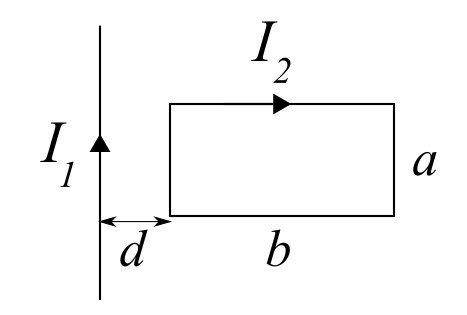

8. Sähkömagnetismi
Tärkeimpiä asioita ovat magneettinen voima, magneettikentät, induktio ja Lenzin laki. Tehtävissä saa käyttää valitsemaasi kaavakokoelmaa (esim. MAOL) ja trigonometrista taulukkoa.
Tarkastellaan kahta sähköisesti varattua pistevarausta \(A\) ja \(B\), joiden varaukset ovat \(Q_A=Q_B\). Varaukset kiihdytetään ensin sähkökentässä, jonka levyjen välinen jännite on \(U\). Varaukset saapuvat kiihdytyksen jälkeen kohtisuoraan magneettikenttään siten, että niiden nopeus on kohtisuorassa magneettivuon tiheyden kanssa. Jos varausten massasuhde \(\frac{m_B}{m_A} = 9\), kuinka suuri on niiden ratojen suhde magneettikentässä?
Ratkaisu 8.1
Kuvassa on kaksi suoraa virtajohdinta. Pitkässä johtimessa kulkee virta \(I_1\) ja suorakulmion muotoisessa johtimessa kulkee virta \(I_2\). Suorakulmion sivujen pituudet ovat \(a\) ja \(b\). Kuinka suuri on magneettinenvoima joka kohdistuu silmukkaan, kun silmukka on etäisyydellä \(d\) johtimesta?

Kuvan mukainen sylinterni muotoinen virtajohdin on asetettu homogeeniseen magneettikenttään, jossa se on levossa. Virtajohtimen materiaalilla on tiheys \(3{,}25\,\mathrm{\frac{g}{cm^3}}\) ja johtimen säde on \(2{,}2\,\mathrm{mm}\). Magneettikentän tiheys on \(0{,}65\,\mathrm{T}\) ja sen suunta on tasosta sisäänpäin.
a) Mihin suuntaan virta kulkee johtimessa?
b) Kuinka suuri on johtimessa kulkeva virta?

Neliön muotoisen johdinsilmukan sivunpituus on \(1{,}4\,\mathrm{m}\). Silmukkaan on kytketty vastus, jonka resistanssi on \(55\,\mathrm{\Omega}\). Johdinsilmukka painaa \(0{,}75\,\mathrm{kg}\) ja se pudotetaan homogeeniseen magnettikenttään, jossa se putoaa alaspäin kiihtyvällä nopeudella. Magnettikentän suunta on tasosta sisäänpäin. Jätetään ilmanvastus huomiotta.
a) Mikä on johdinsilmukan rajanopeus?
b) Kuinka suuri jännite indusoituu virtasilmukkaan?
c) Mihin suuntaan virta kulkee silmukassa?
Ratkaisu 8.4